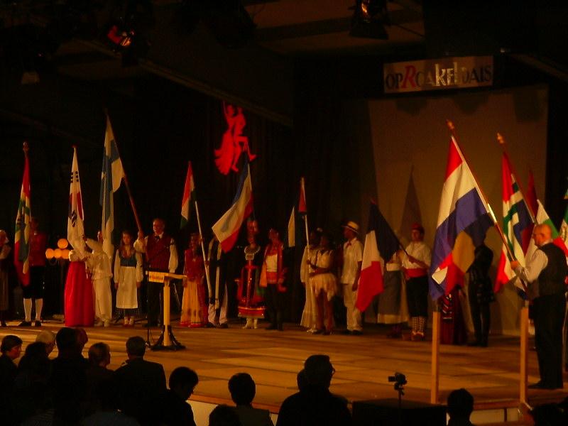
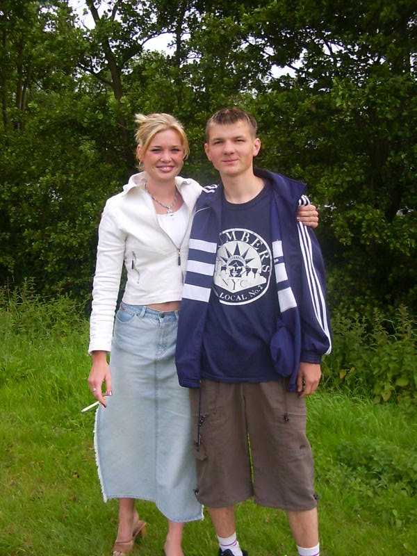

Июнь 25, 2003
9804 PB NOORDHORN
HOLLAND
Последний день. Жаль.
Весь день cобирали вещи, а что ещё (?).. нет, не весь, до вечера.
Вечер.
Собрались все, кто приехал в Нидерланды, и решили поехать посмотреть концерт разных народов мира!

Начало представления.
Были и Русские. И неплохо выступили.
Мне ещё понравилось выступление банды из Африки. В начале мощные удары по барабанам, cделанным в африканском стиле. Потом выбегает животное, в костюме льва, только голова у него немного большая :), а может это не лев…
Китайцы. Девять девушек, одетых в вечерние платья (и все одинакового рота), выполняли танец, который, как мне показалось, немного усыплял. На сцене только тёмно-синее освещение. Очень расслабляет =).
Я как всегда сел с Марьяной =). Концерт длился долговато, но не сказать, что изнуряюще, как мой журнал :).
Вернулись домой в 23:45. Хозяин предложил сходить ещё в гости попить кофе, но мы сказали, что завтра рано вставать – 6:00. Тогда сделали кофе у нас. Кто кофе, а кто пиво :). Отец начал толкать речи, а я, соответственно, переводить. Про то, что нам тут очень понравилось, про их и наше отношение к друг другу. Потом они наверное поняли, что меня не стоит мучать переводом хотя бы сегодня, поэтому как только я допил своё пиво сразу пошёл провожать Марьяну домой.
Взяли велосипеды и пошли пешком. Как она мне пояснила по дороге – это для того, чтобы дольше путь был :). Подошли к её дому, она поставила вой байк, отошли немного, чтобы отец не проснулся, и разговаривали. Всё не пуска меня домой, или это я не хотел идти. Сказала, что её не хочется, чтобы эта ночь кончалась – последний раз видимся. И когда она подошла ну, совсем уже близко (я знал, что будет дальше :)), я понял, что ошибся в ту ночь, кода впервые её обнял, пологая, что это больше не произойдёт. Простояли около 45-ти минут. Я её раз чмокнул и хотел ехать. Она меня опередила, сказав, что нужно три раза, тогда я добавил ещё два и уже точно поехал.
Мне осталось спать 4 часа.

Я с Анжелой (перед концертом).
Till next time,
Vadim_K
;void(0);){kind=link}
;void(0);){kind=link}